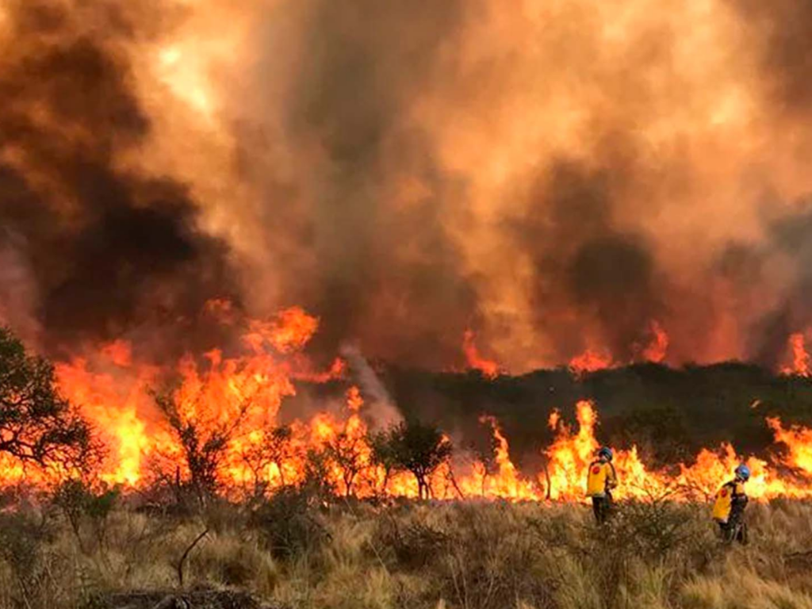

Incendio forestal en Lin Calel
El pasado jueves, alrededor de las 13:00, se convocó a Bomberos Voluntarios de Claromecó por un incendio forestal en una zona rural cercana a Lin Calel.
Una vez en el lugar, se observó un fuego en un sector del lote donde estaban unas colmenas debajo del monte, y un frente de fuego en un sembrado de cebada. Dicho frente de fuego, se dirigía hacia las barrancas del arroyo Claromecó.
Ambas dotaciones se pusieron a atacar el fuego sobre sus flancos logrando circunscribir el perímetro afectado, una vez apagado el fuego se realizó enfriado y control para evitar cualquier reinicio.
Se quemaron algunas colmenas, un sector de monte en su parte baja, cebada en pie y pastos en el sector de las barrancas del arroyo.
Ajedrez: el oficial de Primera
Esta noche, desde las 20, se jugará la segunda fecha del Torneo Oficial de Ajedrez de Primera 2024, que tuvo su comienzo el viernes anterior, con las victorias de los dos máximos candidatos a la corona, el aspirante a maestro Francisco Restuccia, de Orense, y Sergio Martín Tumini.
Cabe señalar que el máximo certamen del juego ciencia local se juega a una sola ronda, dentro del sistema Americano, que propone una lucha de todos contra todos, a un ritmo de 90 minutos para toda la partida, con un incremento de 30 segundos por jugada desde el inicio para cada competidor.
Además del multicampeón Restuccia, que busca su novena consagración, y del veterano pero siempre vigente Tumini, animan el trascendente certamen Damián Arévalo, otro permanente animador del ajedrez tresarroyense de las últimas décadas; Pablo Natal, que de esta forma retorna a la actividad, y los jóvenes y promisorios Matías López (esta será su segunda presentación en primera) y el debutante Braian Villalba. Ambos buscan ratificar las buenas actuaciones que han logrado a lo largo del año.
El programa a desarrollarse hoy en el local 14 de la Galería Tres Arroyos dispone estos cruces: mesa 1, Arévalo v. López; mesa 2, Villalba v. Tumini y mesa 3, Restuccia v. Natal.
Resultados
Por la primera fecha, Restuccia 1, Arévalo 0; Natal 0,5, Villalba 0,5; Tumini 1, López 0. De esta forma, las posiciones son encabezadas por Restuccia y Tumini con un punto, Natal y Villalba tienen media uniad y cierran sin puntos Arévalo y López.